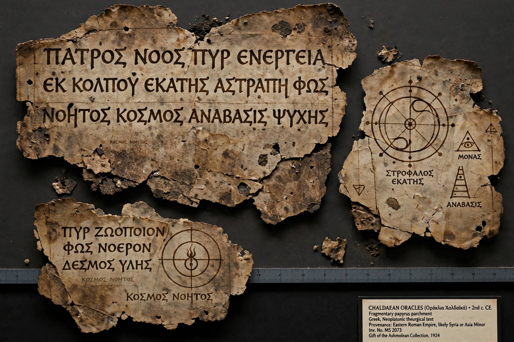

The Chaldean Oracles are a set of spiritual and philosophical texts, mainly in Greek hexameter verse, attributed to Julian the Chaldean and his son Julian the Theurgist in the 2nd century CE. Only fragments survive, preserved in quotations by later Neoplatonist philosophers.

The Oracles describe a transcendent supreme God, the Father, beyond being, with a second intellectual principle or Demiurge, and the goddess Hecate as world soul mediating between them. They teach theurgy — ritual practices by which the soul ascends through cosmic spheres — and warn against daemons of the material world. Despite the name, the texts reflect Greco-Roman Platonism more than Babylonian religion; 'Chaldean' connoted ancient eastern wisdom.
Proclus, Iamblichus and Psellus commented on the Oracles, which were revered almost as scripture by late Neoplatonists and influenced Renaissance occultism and modern Western esotericism.